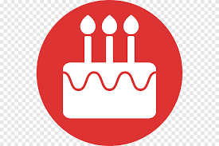

HAN SANG HUN

2000.03.06
 +(82) 10-1111-1111
+(82) 10-1111-1111
tkdgnsgks566245@naver.com
" 안녕하세요."
20191110 한상훈의 개인 웹페이지에 오신 것을 환영합니다.
이곳은 그 여정을 담은 공간으로, 꿈에 한 발짝 더 다가가기 위한 기록입니다.
좌측의 메뉴를 사용하여 다른 페이지로 이동 할 수 있습니다.
위에서부터 순서대로 Home(시작페이지, 자기소개), INTERESTS(취미), COURSE(진로 및 계획) 입니다.
아래의 이미지를 누르면 저의 블로그와 GitHub 페이지로 이동하게 됩니다.